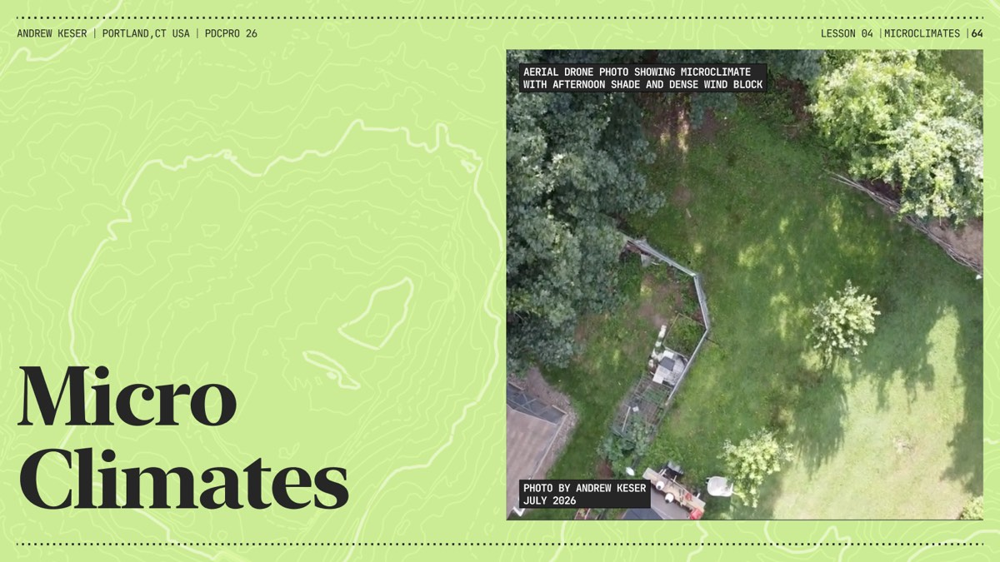
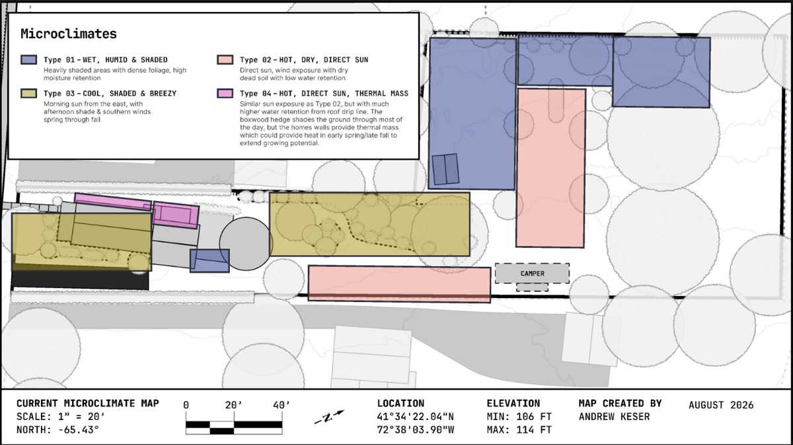

Four distinct microclimate zones identified on the property, the known plant species already growing in them, and observations from studying how they shift with the planned clearing work.

Aerial drone photo showing microclimate with afternoon shade and dense wind block.
Photo by Andrew Keser, July 2026.
| Type | Name | Description |
|---|---|---|
| Type 01 | Wet, Humid & Shaded | Heavily shaded areas with dense foliage, high moisture retention. |
| Type 02 | Hot, Dry, Direct Sun | Direct sun, wind exposure with dry dead soil with low water retention. |
| Type 03 | Cool, Shaded & Breezy | Morning sun from the east, with afternoon shade & southern winds spring through fall. |
| Type 04 | Hot, Direct Sun, Thermal Mass | Similar sun exposure as Type 02, but with much higher water retention from roof drip line. The boxwood hedge shades the ground through most of the day, but the home's walls provide thermal mass which could provide heat in early spring/late fall to extend growing potential. |

Current Microclimate Map — scale 1" = 20', north -65.43°, location 41°34'22.04"N 72°38'03.90"W, elevation min 106 ft / max 114 ft.
Map created by Andrew Keser, August 2026.
Species observed before the formal Lesson 8 iNaturalist survey (see the Species Inventory page for the surveyed set — the two lists overlap heavily but were compiled differently).
Native (27)
Introduced (34)
What did I notice after studying microclimates on the site?
Most of the clean up and maintenance projects I have planned for the site may drastically change the microclimates. For example, Zone 4 will get much more afternoon summer sun without the dense shade trees and vines along the north western property line.
Zone 5 has lots of potential fuel and mulch. The compost pile is covered with dry brush that can be shredded and used as mulch. The Norway maples can be cut back to season and use as firewood.
Zone 2 is currently a pass through zone. Most circulation paths go from Zone 1 to Zone 3 while walking through Zone 2. Aside from the mature decorative trees there isn't really keeping anyone in Zone 2.
What ideas have I come with after observing microclimates?
I've always wanted a reason to grow espalier fruit trees closer to the house and the pathway between the house and the pool deck could be a great fit for this.
Instead of building a pergola or some kind of man made structure to provide shade over the pool, I could replace the hostas with vining plants like grapes, or cold hardy kiwi and passion flower. Then this space can provide some kind of fruit yield while shading the areas where people spend the most time.
Bring more clover closer to the house instead of having it in far out zones.
Incorporate cooking area and fire pit into zone 2 so its close enough to where people gather but far enough from any flammable structure.